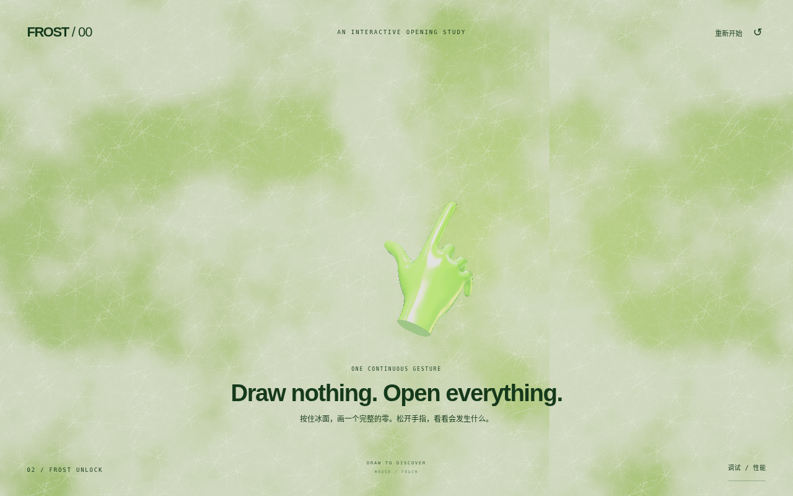
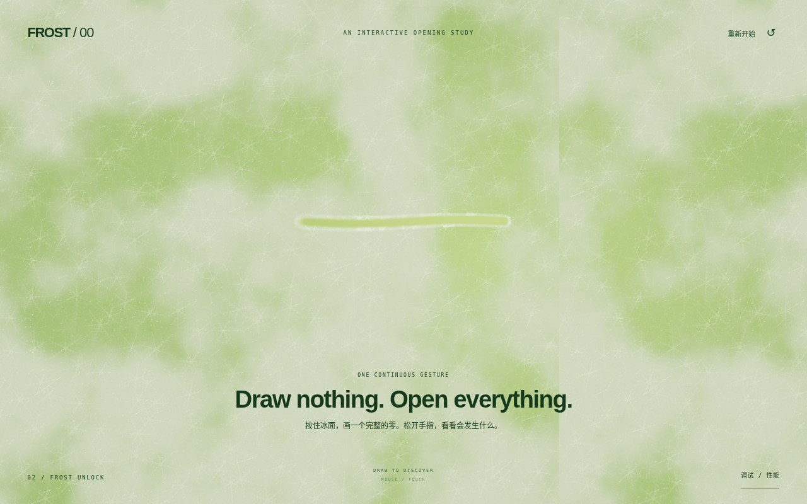
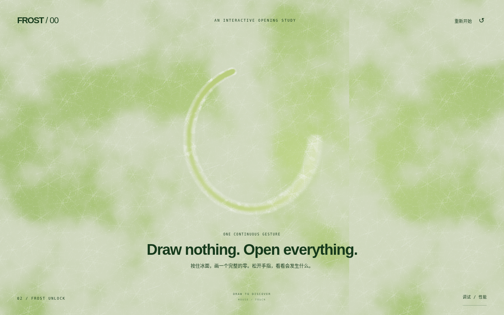
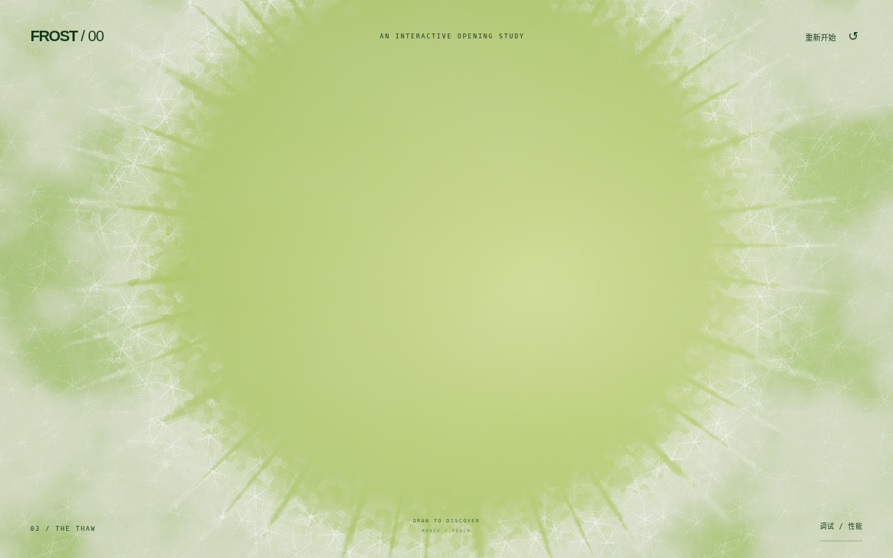
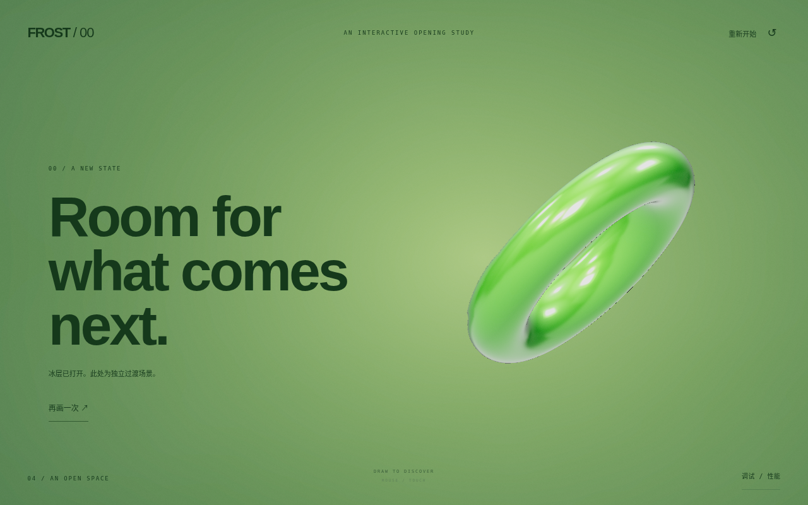
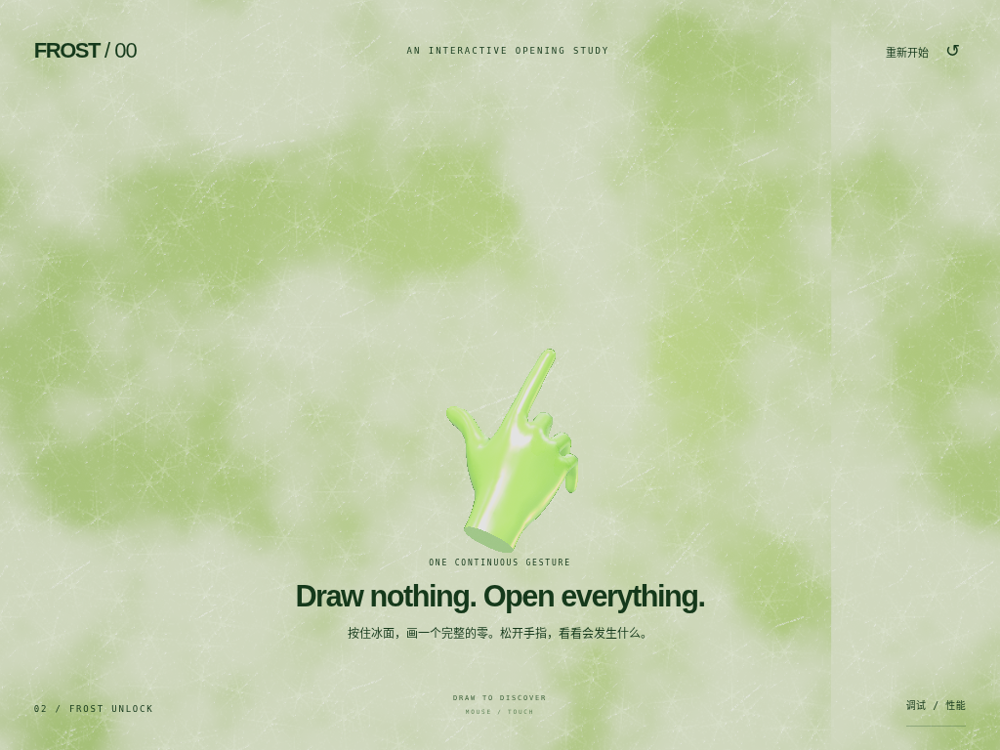
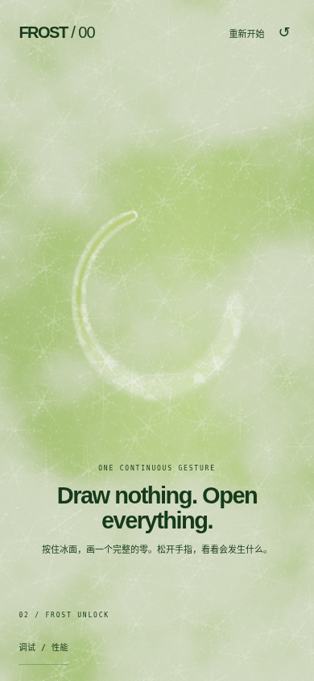

从一个零，
打开一层冰。
真实 WebGL 技术演示。鼠标或单指绘制会写入 GPU 热量场，松手后依据闭合、圆度与绕转角判断，成功后连续融化并进入独立三维场景。
原站与官方文章当前被网络代理拦截，尚未完成原作逐帧对照。这里呈现独立实现与实际运行结果，不把功能验证描述为视觉复刻完成。

轨迹是真正画进冰面的。




从晶体扩散，到新的空间。




完整交互过程。
真实触控输入驱动相同的生产控制器，按固定审核时间点取景。编码帧率不代表实际设备性能；实时演示仍可自由绘制。
单指绘制，直接完成。




Linux Chromium / SwiftShader 与触控模拟，尚未进行实体 iPad Safari 测试。网页自带 10 秒性能采样，可在实际设备导出数据。
仍需继续解决的差距。
| 项目 | 当前边界 |
|---|---|
| 原作对照 | 参考未成功访问，构图、色值、节奏、官方实现细节尚未核验。 |
| 冰面细节 | 已具备枝晶、法线、折射、白边与动态融化；仍有程序化纹理特征，尚缺摄影级微霜与复杂散射。 |
| 手部 | MIT 通用低面数骨骼手模、独立姿态；指节、腕部、材质微细节和接触动作还需精修。 |
| 碎裂与扩散 | 真实网格碎片与不规则融化前沿；没有物理断面、体积冰屑或热力学求解。 |